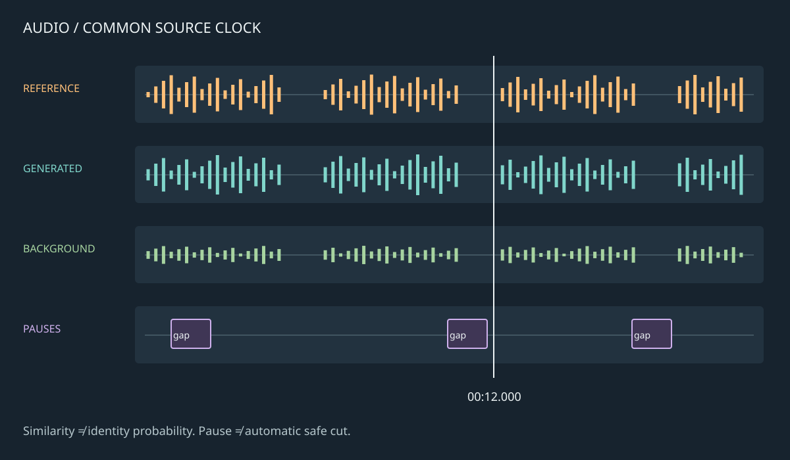

Конвейер
Анализ, звук и синтез
От файла к слоям
- HTTP проверяет запрос и передаёт источник в
speech/media_transcript.py. - FFmpeg подготавливает звук. Sherpa выделяет голосовые группы, Whisper получает текст и времена; проблемные места могут уточняться отдельным проходом.
vision/video_revolver.pyсобирает визуальные стадии. YuNet ищет лица; Light-ASD оценивает активное говорение; дальнейшие слои зависят от доступных движков и настроек.vision/video_scene.pyкоординирует планы, OCR и предметы, выборку и дополнительный поиск мелких объектов.graph/media_graph_ingest.pyи связанные модули публикуют компактные узлы, связи и временные окна. Ранние результаты могут уточняться.
Проверка и обработка звука


| Модуль | Назначение |
|---|---|
audio/audio_processing.py | Шумоподавление, EQ и обработанная копия WAV |
audio/dialogue_pauses.py, audio/pauses.py | Измеренные паузы и кандидаты для склейки |
audio/audio_scene.py, audio/zipformer_audio.py | Классификация музыки и фоновых событий с платформенными backend |
synthesis/auto_synthesis.py | Последовательные попытки, оценки, выбор результата и контроль регрессии |
synthesis/speaker_metric.py, speech_metrics.py | Метрики сходства и речи; число не равно вероятности идентичности человека |
synthesis/video_dub.py, dub_timing.py, dub_background.py | Сборка дубляжа, согласование длительности и фоновая дорожка |
prosody/ | Подготовка ударений, контекста, слогов/морфем и точечных повторов |
Синтез берёт выбранные образцы и текст. Сходство на русском не гарантирует сходства английского дубляжа. Используй одинаковые seed, тексты и исходники для A/B; сохраняй оценки и ограничения эксперимента. Метрики качества, скорость и память нужно измерять отдельно.
Что означает прогресс
Готово/пропущено/ошибка — статус конкретного этапа. Пропуск может означать отсутствие движка, настройки или применимых данных. Итоговый граф должен сохранять покрытие и источники. Эти страницы не обещают, что все слои работают в realtime на любом устройстве.